Simple Systems
Even if we can easily find the equations of motion of a system, very few are simple enough to solve exactly using analytical methods. In this lesson we’ll consider some of the most common such systems. We’ll focus on (possibly non-conservative) forces acting on a single-particle particle of mass \(m\) that take the form, \[ \mathbf{F} = \mathbf{F}(\mathbf{x}, \mathbf{v}, t). \] We’ll assume \(\mathbf{F}\) is either linear or quadratic in position and velocity. With a few exceptions, these are the few cases for which we can even solve the equations of motion analytically.
For the most part, we’ll focus on the case when everything is 1-dimensional, \(F = F(x, v, t)\). While we’ll speak in this lesson of \(F\) being a force, \(x\) a position, and \(v\) a velocity, the methods we describe indeed can apply to many other situations as well.
For example, \(x\) could represent a generalized coordinate (say an angle), in which case \(v\) would be a generalized velocity (say an angular velocity) and \(F\) a generalized force (say a torque). In some cases, \(x\) need not be a coordinate at all. For example, we can use the same techniques from this lesson to analyze a simple circuit, in which case \(x\) would be a charge or a current and \(F\) would be a supplied voltage.
Independent Forces
The first and simplest case we’ll consider are forces that don’t depend on position or velocity, \[ m \mathbf{a} = \mathbf{F}_0(t). \] We can solve these systems directly by integrating both sides, i.e. reducing to quadrature. We have,
\[ \begin{align*} \mathbf{a}(t) &= \frac{1}{m}\mathbf{F}_0(t), \\ \mathbf{v}(t) &= \mathbf{v}_0 + \frac{1}{m}\int_0^t dt'\mathbf{F}_0(t'), \\ \mathbf{x}(t) &= \mathbf{x}_0 + \mathbf{v}_0t + \frac{1}{m}\int_0^t dt' \int_0^{t'} dt''\mathbf{F}_0(t''). \\ \end{align*} \] The simplest of these cases are when there are no forces at all, and when the forces are constant. If there are no forces at all acting on the system, \(\mathbf{F}_0 = \mathbf{0}\), in which case the equations of motion reduce to
\[ \begin{align*} \mathbf{a}(t) &= 0, \\ \mathbf{v}(t) &= \mathbf{v}_0, \\ \mathbf{x}(t) &= \mathbf{x}_0 + \mathbf{v}_0t. \\ \end{align*} \] This is just a statement of Newton’s First Law. If no forces act on a particle, it continues linearly along its path at constant velocity. The next simplest case is when \(\mathbf{F}_0=const\). In this case, the equations of motion become
\[ \begin{align*} \mathbf{a}(t) &= \frac{1}{m}\mathbf{F}_0, \\ \mathbf{v}(t) &= \mathbf{v}_0 + \frac{1}{m}\mathbf{F}_0 t, \\ \mathbf{x}(t) &= \mathbf{x}_0 + \mathbf{v}_0t + \frac{1}{2m^2}\mathbf{F}_0^2. \\ \end{align*} \] This case includes the gravitional force near the surface of the Earth, in which case \(\mathbf{F}_0=m\mathbf{g}\). It also includes the problem of an electric charge placed close to a large conducting sheet with a uniform electric field, where \(\mathbf{F}_0=q\mathbf{E}_0\).
In these problems, the motion will always be along a parabolic arc. The parabola will slope toward the force if the force is attractive, and away from the force if it’s repulsive.
Example: Free-fall near Earth
Suppose an object of mass \(m\) is falling freely near the Earth’s surface. In this case, \(\mathbf{F}_0 = m\mathbf{g}\), so
\[ \begin{align*} \mathbf{a}(t) &= \mathbf{g}, \\ \mathbf{v}(t) &= \mathbf{v}_0 - \mathbf{g}t, \\ \mathbf{x}(t) &= \mathbf{x}_0 + \mathbf{v}_0t + \frac{1}{2}\mathbf{g}t^2. \end{align*} \] The motion in this case will always lie in the plane spanned by \(\mathbf{v}_0\) and \(\mathbf{g}\). This means without loss of generality we can assume motion lies in the xy-plane with \(\mathbf{g} = -g\mathbf{e}_y\). Then \(y\) can be solved as a function of \(x\) to give \[ y(x) = v_{0}\frac{x}{v_0 \cos \theta}\sin \theta - \frac{1}{2} g\bigg(\frac{x}{v_0 \cos \theta}\bigg)^2, \] which is of course a downward-sloping parabola centered at the vertex \(\big(\frac{v_0^2 \sin 2\theta}{2g}, \frac{v_0^2 \sin^2 \theta}{g}\big)\).
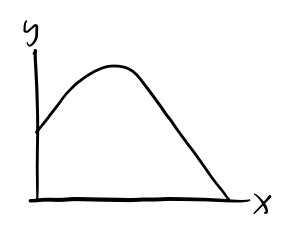
Drag Forces
The next type of forces we’ll consider are those which are functions of velocity,
\[ m\mathbf{a} = \mathbf{F}(\mathbf{v}). \] In the 1-dimensional case, this reduces to,
\[ ma = F(v). \] Provided \(v\) is small, we can approximate \(F(v)\) by its first few terms. I’ll write it as,
\[ F(v) \approx a - bv - cv^2. \] Typically, drag forces shouldn’t apply a force when the particle is at rest, which means \(a=0\). The remaining two terms cover two distinct regimes of drag:
- Linear or viscous drag: \(F(v) = -bv\), where \(b > 0\).
- Quadratic or air drag: \(F(v) = -cv^2\), where \(c > 0\).
Linear Drag
It’s convenient to analyze these two distinct cases separately. Let’s first look at linear drag. In that case \(c=0\), and we end up with the linear differential equation \[ m \ddot x + b \dot x = 0. \] To solve this equation, re-write it in terms of \(v = \dot x\),
\[ \frac{dv}{dt} = -\frac{b}{m} v. \] Integrating both sides, we get
\[ v(t) = v_0 e^{-\frac{b}{m} t}. \] For \(x(t)\) just integrate both sides again to get
\[ x(t) = x_0 + \int_0^t v_0 e^{-\frac{b}{m} t'} dt' = x_0 + \frac{mv_0}{b}\big(1 - e^{-\frac{b}{m} t}\big). \] Evidently, such forces cause a moving particle to slowly come to rest, since \(v \rightarrow 0\) as \(t \rightarrow \infty\). The position where the particle comes to rest is evidently \(x_f = x_0 + \frac{mv_0}{b}\). The \(\frac{1}{e}\) decay time is \(\tau = \frac{m}{b}\). This suggests that \(b\) functions as a sort of drag coefficient, since a large \(b\) causes the system to dissipate faster.
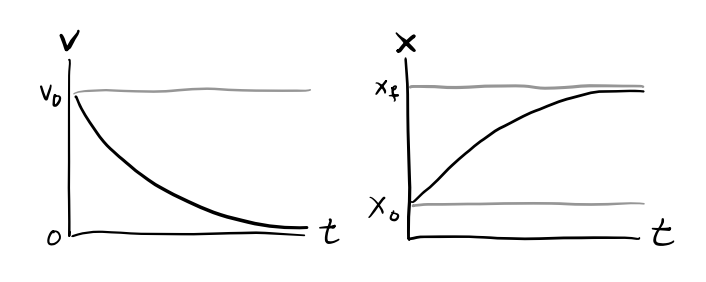
Linear drag is frequently used to model objects moving through a viscous medium at low speeds. Suppose a spherical object of radius \(R\) is moving slowly in a viscous medium with viscosity \(\eta\). Then the drag force on the object is given by Stokes’ Law,
\[ \mathbf{F}_d = -6\pi\eta R \mathbf{v}. \] This force is linear in velocity, hence we can write \(F_d = -6\pi\eta R v\), which says the drag constant \(b\) is just
\[ b = 6\pi\eta R. \]
Example: Dropping a ball in syrup
Suppose a ball of radius \(R\) and mass \(m\) is dropped in a viscous syrup from rest at \(x=0\). Find the velocity and position of the ball as it moves through the fluid.
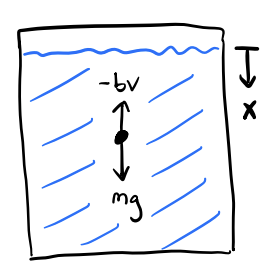
This is a 1-dimensional motion problem since the ball is dropped from rest under gravity, with \(F=F_d + mg\). Here Stoke’s law applies, so the drag force is \(F_d = -bv = -b\dot x\). Plugging into Newton’s Second Law, we have \[ m\ddot x + b \dot x = g. \] Re-writing this in terms of \(v = \dot x\), we get \[ m \dot v + bv = g, \] which is a first order linear differential equation for the velocity \(v(t)\). Its general solution is given by \[ v(t) = v_0 e^{-\frac{b}{m}t} + \frac{mg}{b}(1-e^{-\frac{b}{m}t}). \] Notice that as \(t \rightarrow \infty\), \(v(t) \rightarrow \frac{mg}{b}\). That is, \(v(t)\) tends toward a terminal velocity \[ v_t = \frac{mg}{b} = \frac{mg}{6\pi\eta R}. \] Since the ball is dropped from rest, \(v_0=0\). The velocity of the ball is thus given by \[ v(t) = v_t(1-e^{-\frac{b}{m}t}). \] Using this we can solve for the position to get \[ x(t) = v_t\bigg(t - \frac{b}{m}(1 - e^{-\frac{b}{m}t})\bigg). \] Notice that drag causes the ball to fall much slower than it would in free-fall. Instead of being a quadratic function of time, \(x(t)\) is now approximately a linear function of time, with \(x(t) \sim v_t t\) for large \(t\).
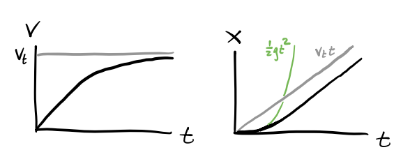
Quadratic Drag
We’ll now look at quadratic drag, where \(b=0\). Then we get the differential equation, \[ m\ddot x + c \dot x^2 = 0. \] This is no longer a linear differential equation due to the appearance of \(\dot x^2\), but surprisingly we can still solve it using separation of variables. Again, let \(v = \dot x\). Then we get \[ m\dot v + cv^2 = 0. \] Rearranging and solving for \(v(t)\), we have \[ \frac{dv}{dt} = -\frac{c}{m}v^2 \quad \Longrightarrow \quad \int_{v_0}^{v} \frac{dv}{v^2} = -\frac{c}{m} t \quad \Longrightarrow \quad v(t) = \frac{1}{\frac{1}{v_0} + \frac{c}{m}t}. \] Integrating both sides and solving for the position, we get \[ x(t) = x_0 + \int_0^t \frac{dt}{\frac{1}{v_0} + \frac{c}{m}t} = x_0 + \frac{m}{c}\log\bigg( 1 + \frac{cv_0}{m}t \bigg). \] In this case, \(v \rightarrow 0\), but \(x \rightarrow \infty\) as \(t \rightarrow \infty\). Evidently, while linear drag is strong enough to slow a moving particle back down to rest, quadratic drag is not.

Quadratic drag is often used to model the drag experienced by objects moving through air or other media where pressure is more important than viscosity. For an object moving through air, drag is well-modeled by the drag equation, \[ \mathbf{F}_d = -\frac{1}{2}C \rho A v^2 \mathbf{e}_v, \] where \(\rho\) is the density of air, \(A\) is the cross-sectional area of the object in the direction of motion, and \(C\) is the drag coefficient. Since this force is proportional to \(v^2\), we evidently have \[ c = \frac{1}{2}C \rho A. \]
Reynold’s Number
In practice, how can we tell if drag is in the linear or quadratic situation? A simple way to do this is by looking at the Reynold’s Number. Let’s go back to the full quadratic equation for drag, with \(a\) set to \(0\), \[ F_d = -bv - cv^2. \] Notice that the ratio \(\frac{cv}{b}\) gives the relative importance of the two drag terms. Using Stoke’s Law and the Drag Equation for the drag constants, we can re-write this expression as \[ \frac{cv}{b} = \frac{\frac{1}{2}C \rho Av}{6\pi\eta R} = \frac{C \rho Rv}{3\eta}. \] This ratio is usually rescaled by a factor of \(\frac{3}{C}\) to get the Reynold’s number \(r\), \[ r = \frac{\rho Rv}{\eta}. \] The Reynold’s number is usually what’s used in practice to decide whether we’re in the linear or quadratic drag regime.
- When the Reynold’s number is low, \(r \ll 1\), \(v \ll \frac{\eta}{R\rho}\), and we’re in the linear regime.
- When the Reynold’s number is high, \(r \gg 1\), \(v \gg \frac{\eta}{R\rho}\), and we’re in the quadratic regime.
- The edge case is when \(r \approx 1\), or \(v \approx \frac{\eta}{R\rho}\). Then, we have to include both the linear and quadratic drag terms in the equation of motion. In this general case, there’s no analytic solution and we have to solve things numerically.
The Reynold’s number is usually easy to calculate since we can often at least roughly estimate the object’s velocity and radius, and we can usually look up the medium’s viscosity and density. For example, a baseball thrown in air at 100 mph would have a Reynold’s number of about \(r \approx 3 \cdot 10^5 \gg 1\), which is solidly in the quadratic drag regime.
Harmonic Oscillation
The next case we’ll consider is when the force is linear in position, \[ \mathbf{F} = -k \mathbf{x}. \] This relationship is called Hooke’s Law. In the 1-dimensional case, it reduces to the equation of motion \[ m \ddot x + kx = 0. \] This is a second-order linear differential equation for \(x(t)\). The general solution to this differential equation depends on the sign of \(k\). If \(k < 0\), we have \[ x(t) = c_1 e^{\frac{k}{m}t} + c_2 e^{-\frac{k}{m}t}. \] Since \(x \rightarrow \infty\) pretty quickly as \(t \rightarrow \infty\), this kind of solution is usually non-physical, except perhaps in situations where \(x\) is bounded between some known range.
The most important case by far is when \(k > 0\). In this setting, it’s typical to define \(\omega^2 \equiv \frac{k}{m}\) and re-rewrite the equation as \[ \ddot x + \omega^2 x = 0. \] This is called the simple harmonic oscillator or SHO. The canonical example of SHO is of course the motion of a mass attached to an ideal spring with spring constant \(k\).
The general solution to SHO is a linear combination of sine and cosine functions, \[ x(t) = c_1 \cos \omega t + c_2 \sin \omega t. \] This trajectory is oscillatory and stable since it only involves sines and cosines, both of which are bounded periodic functions. It’s custom to re-write this equation in a more useful form using trig identities,
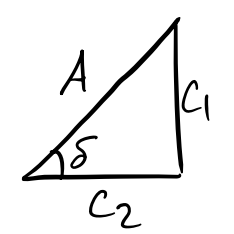
\[ \begin{align*} x(t) &= c_1 \cos \omega t + c_2 \sin \omega t \\ &= A\bigg(\frac{c_1}{A}\cos \omega t + \frac{c_2}{A}\sin\omega t \bigg) \\ &= A(\cos\delta \cos \omega t + \sin\delta\sin\omega t) \\ &= A\cos(\omega t - \delta). \\ \end{align*} \] In this form, \(A\) is the amplitude of oscillation and \(\delta\) is the phase of oscillation. The period of oscillation is given by \[ \tau = \frac{2\pi}{\omega} = 2\pi\sqrt{\frac{m}{k}}. \]
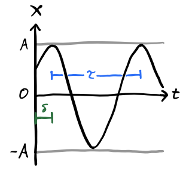
It’s usually convenient when dealing with harmonic oscillators to work in the complex plane. Consider the complex form of SHO, given by the differential equation \[ \ddot z + \omega^2 z = 0, \] where \(z = x+iy = |z|e^{i\theta}\) is a complex variable. Its general solution is given as a linear combination of complex exponentials, \[ z(t) = \tilde c_1 e^{i\omega t} + \tilde c_2 e^{-i\omega t}. \] If we demand that the real solution we seek be given by \(x(t) = \text{Re}(z(t))\), then
\[ \begin{align*} x(t) &= \Re(c_1 e^{i \omega t}) + \Re(c_2 e^{-i \omega t}) \\ &= \frac{1}{2}(c_1 + c_2^*)e^{i \omega t} + \frac{1}{2}(c_1^* + c_2)e^{-i \omega t} \\ &= \frac{1}{2} C e^{i \omega t} + \frac{1}{2} C^* e^{-i \omega t} \\ &= A \cdot \Re(e^{i(\omega t - \delta)}) \\ &= A \cos(\omega t - \delta), \end{align*} \] where \(C \equiv Ae^{i \delta}\) is some complex number whose real and imaginary parts are \(c_1+c_2^*\) and \(c_1^*+c_2\) respectively. For the full complex solution we can similarly write \[ z(t) = A e^{i(\omega t - \delta)} \] Evidently then, SHO is just a CCW circular rotation in the complex plane with radius \(A\).
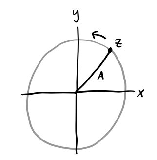
Example: Bottle sloshing in a bucket
Suppose a bottle of mass \(m\) floats calmly in a bucket of water of density \(\rho\) at some equilibrium depth of \(d=d_0\). Suppose we push down slightly on the bottle, perturbing its depth to \(d = d_0 + x\). The bottle will begin to oscillate. Find its period of oscillation \(\tau\).
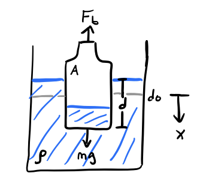
The forces on the bottle are gravity downward and an opposing buoyant force upward, \[ F = mg - \rho g V_{sub} = mg - \rho g A(d_0 + x). \] At equilibrium, the forces must balance, so \(0 = mg - \rho g A d_0\), which means \(d_0 = \frac{m}{\rho A}\) is the equilibrium depth. Simplifying, this says the equation of motion is given by \[ m \ddot x = mg - \rho g A(d_0 + x) = -\rho g A x = -\frac{mg}{d_0} x. \] This is just SHO with spring constant \(k = \frac{mg}{d_0}\), or angular frequency \(\omega = \frac{g}{d}\). Thus, the period of the bottle’s oscillation when \(x\) is small is given by \[ \tau = \frac{2 \pi}{\omega} = 2\pi\sqrt{\frac{d_0}{g}}. \]
Two-Dimensional Harmonic Oscillation
Suppose now we allow a mass to move in two dimensions. Hooke’s Law becomes
\[ \begin{align*} m \ddot x &= -k_x x, \\ m \ddot y &= -k_y y. \end{align*} \] Since the equation of motions are uncoupled, the solutions are simply given by
\[ \begin{align*} x(t) &= A_x \cos(\omega_x t - \delta_x), \\ y(t) &= A_y \cos(\omega_y t - \delta_y). \end{align*} \] Despite what intuition might suggest, the motion of the mass is now quite non-trivial. In fact, the behavior of the trajectory depends entirely on the ratio of the frequencies \(\frac{\omega_x}{\omega_y}\) and the relative phase between the two oscillations \(\delta = \delta_x - \delta_y\).
The motion will only be periodic if \(\frac{\omega_x}{\omega_y}\) is rational, i.e. if the frequencies are integer multiples of each other. The curves traced out by \((x(t), y(t))\) when \(\frac{\omega_x}{\omega_y}\) is rational are called Lissajous curves. They can get quite complicated, but they’ll always be periodic. Here’s what a few of them look like for different\(\frac{\omega_x}{\omega_y}\) and \(\delta\).

Example: Charged particle in a uniform magnetic field
Suppose a particle with charge \(q\) and mass \(m\) is moving in the presence of a constant magnetic field \(\mathbf{B}\). Find its equations of motion, solve for the trajectory, and describe what it looks like.
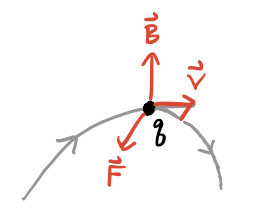
If \(\mathbf{v}\) is the velocity of the particle, the magnetic force is given by \(\mathbf{F} = \frac{q}{c} \mathbf{v} \times \mathbf{B}\). Suppose \(\mathbf{B} = B \mathbf{e}_z\). Then \[ \mathbf{F} = \frac{q}{c}\mathbf{v} \times \mathbf{B} = \frac{qB}{c}(\dot y \mathbf{e}_x - \dot x \mathbf{e}_y), \] The equations of motion are thus
\[ \begin{align*} m \ddot x &= \frac{qB}{c} \dot y , \\ m \ddot y &= -\frac{qB}{c} \dot x , \\ m \ddot z &= 0. \\ \end{align*} \] Define \(\omega \equiv \frac{qB}{c}\). The first two equations can be decoupled to give two independent SHO equations in the velocities,
\[ \begin{align*} \ddot v_x &= -\omega^2 v_x , \\ \ddot v_y &= -\omega^2 v_y , \\ \end{align*} \] with solutions
\[ \begin{align*} v_x(t) &= V_x \cos(\omega t - \delta_x) , \\ v_y(t) &= V_y \cos(\omega t - \delta_y) , \\ \end{align*} \] Now, since \(\ddot v_x = \omega \dot v_y\), we must have \(V_x = V_y\) and \(\delta_y = \delta_x - \frac{\pi}{2}\). Taking \(\delta_x=0\) and \(V_x = R\omega\) for convenience, we get
\[ \begin{align*} v_x(t) &= R\omega \cos(\omega t) , \\ v_y(t) &= -R\omega \sin(\omega t) , \\ \end{align*} \] Finally, integrating the velocity equations gives the trajectory,
\[ \begin{align*} x(t) &= x_0 + R \sin(\omega t), \\ y(t) &= (y_0 - R) + R \cos(\omega t) , \\ z(t) &= z_0 + v_{0z} t. \\ \end{align*} \] This is just a helix of radius \(R\) directed along the z-axis. That is, the particle will just spiral around in a helix directed along the line of the magnetic field. The frequency \(\omega\) is called the cyclotron frequency. Since charge can be positive or negative, it carries a sign, which determines which way the particle will spiral. Notice that \(R\) is just the radius of orbit. It’s customarily expressed in terms of the tangential velocity \(v_\perp = \sqrt{v_x^2 + v_y^2} = R\omega\), \[ R = \frac{mcv_\perp}{qB}. \]
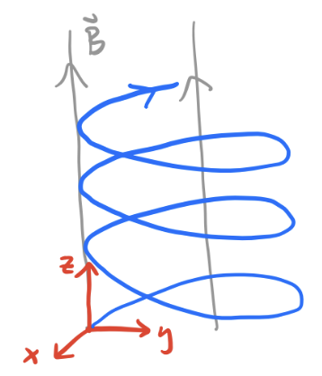
Damped Harmonic Oscillation
Let’s now combine the forces of linear drag with the forces of harmonic oscillation. In the 1-dimensional case, this gives the damped harmonic oscillator or DHO, \[ m \ddot x + bx + kx = 0. \] Define \(\beta \equiv \frac{b}{2m}\) and \(\omega_0 \equiv \sqrt{\frac{k}{m}}\), called the damping constant and the natural frequency respectively. Then we can write the DHO equation of motion as \[ \ddot x + 2\beta x + \omega_0^2 x = 0. \] It’ll be insightful to solve this in its complex form. Consider instead the equation \[ \ddot z + 2\beta z + \omega_0^2 z = 0, \] where \(z\) is complex-valued. Let’s try and assume a trial solution of the form \(z = A e^{i\omega t - \delta}\). Plugging this into the differential equation, we get \[ (-\omega^2 + 2\beta + \omega_0^2)A e^{i\omega t - \delta} = 0. \] In the non-trivial case \(A \neq 0\), this implies \((-\omega^2 + 2\beta + \omega_0^2) = 0\), which we can solve for \(\omega\) to get \[ \omega = i\beta \pm \sqrt{\omega_0^2 - \beta^2} \equiv i\beta \pm \omega', \] where \(\omega' \equiv \sqrt{\omega_0^2 - \beta^2}\). Plugging this into \(z\) then gives \[ z(t) = e^{-\beta t}(c_1 e^{i\omega' t} + c_2 e^{-i\omega' t}). \] When dealing with damped systems, it’s customary to define a quality factor \(Q \equiv \frac{\omega_0}{2\beta}\), which expresses in relative terms how much the system is being damped. We can re-write \(\omega'\) in terms of the Q-factor as \[ \omega' = \omega_0 \sqrt{1 - \bigg(\frac{1}{2Q}\bigg)^2}. \] Evidently, the form of the solutions divide into three cases depending on the sign of \(\omega'\):
Underdamping (\(\omega' > 0\) or \(Q < \frac{1}{2}\)): In this case, \(\omega'\) is real, which means we have a real solution \[ x(t) = A e^{-\beta t} \cos(\omega't - \delta). \] This is an exponentially damped sinusoidal oscillation, where \(x \rightarrow 0\) with time constant \(\tau = \frac{1}{\beta}\). Notice \(\omega' < \omega_0\), which means the actual frequency of the oscillation is less than the natural frequency. When \(Q \gg 1\) this distinction disappears, since \(\omega' \approx \omega_0\). In practice this occurs frequently for underdamped solutions, and \(Q\) need not even be large for \(\omega' \approx \omega_0\).
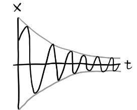
Overdamping (\(\omega' < 0\) or \(Q > \frac{1}{2}\)): In this case, \(\omega'\) is complex. Define \(\kappa \equiv i\omega'\), which is real-valued. Then we have a solution of the form \[ x(t) = e^{-\beta t}(c_1 e^{\kappa t} + c_2 e^{-\kappa t}). \] Since \(\kappa < \beta\), \(x \rightarrow 0\) monotonically, with time constant \(\tau = \frac{1}{\beta - \kappa}\).
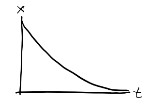
Critical damping (\(\omega' = 0\) or \(Q = \frac{1}{2}\)): This is the edge case where \(\omega_0 = \beta\) exactly. Here the solution is degenerate, with \[ x(t) = (c_1 + c_2 t) e^{-\beta t}. \] Again, \(x \rightarrow 0\), but with time constant \(\tau = \frac{1}{\beta}\). Evidently, the critically damped solution decays faster than the overdamped solution.
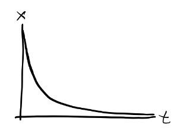
In all three cases the system must eventually come to rest due to the presence of damping. Only the “high Q” systems are allowed to oscillate. Note that as \(\beta \rightarrow 0\), \(Q \rightarrow \infty\). In this limit the solution turns into regular SHO, with \(\omega' \rightarrow \omega_0\).
Driven Damped Harmonic Oscillation
Let’s now add in the independent force term to the mix. In the 1-dimensional case, we get the equation of motion \[ m \ddot x + b \dot x + kx = F_0(t). \] This is called the driven damped harmonic oscillator or DDHO. We imagine \(F_0(t)\) to be some external driving force acting on the system. It’s again convenient to rewrite things by defining \(\beta = \frac{b}{2m}\), \(\omega_0^2 = \frac{k}{m}\), and \(f(t) = \frac{F_0(t)}{m}\). Then we have the linear differential equation \[ \ddot x + 2\beta\dot x + \omega_0^2 x = f(t). \] Recall that the solutions of linear differential equations can be decomposed into two pieces, a homogenous solution and a particular solution. The homogenous solution is the general solution to \[ \ddot x_h + 2\beta\dot x_h + \omega_0^2 x_h = 0. \] But this is just a DHO. We solved that part already. All we need to do now is find any particular solution that will solve \[ \ddot x_p + 2\beta\dot x_p + \omega_0^2 x_p = f(t). \] Provided we do that, the full, general solution will be \(x(t) = x_h(t) + x_p(t)\). There are several ways to find a particular solution, including guessing methods and more systematic methods like Green functions and Fourier transforms. We’ll briefly touch on some of these.
Example: Underdamped hanging spring
Suppose a spring is suspended vertically from a ceiling under the presence of gravity. Find the position \(x=x(t)\). Also, find the amount that gravity changes the spring’s equilibrium length.
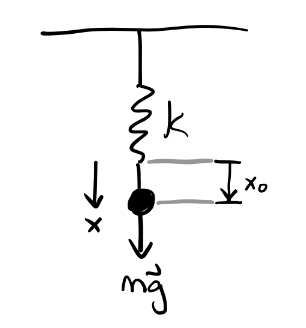
The forces in this problem are gravity, linear drag, and a spring force, so if \(x\) points downward, \[ F = mg - bv - kx. \] The equation of motion is thus given by \[ m \ddot x + b \dot x + kx = mg. \] This is just DDHO with \(f(t) = g\). We thus seek a particular solution \(x_p(t)\) such that \[ \ddot x_p + 2\beta\dot x_p + \omega_0^2 x_p = g. \] Assume a trial solution of the form \(x_p = c\). Then, \[ \omega_0^2 c = g \Longrightarrow c = \frac{g}{\omega_0^2} = \frac{gm}{k}. \] Supposing the spring is underdamped, then \[ x(t) = Ae^{-\beta t} \cos(\omega' t - \delta) + \frac{gm}{k}. \] The new equilibrium occurs when the object is at rest, i.e. when \(\ddot x = \dot x = 0\). This occurs at \(x = \frac{gm}{k}\) relative to the free equilibrium \(x=0\).
Sinusoidal Driving Forces
The most interesting driving forces in practice are ones that are periodic. Periodic driving functions lead to the important concept of resonance, which is a phenomenon that occurs when the driving frequency matches the natural frequency.
Consider a sinusoidal driving force of the form \(f(t) = f_0 \cos\omega t\). In complex form, we can then write \[ \ddot z + 2\beta\dot z + \omega_0^2 z = f_0 e^{i \omega t}. \] Assume a particular solution of the form \(z(t) = \tilde A e^{i \omega t}\) where \(\tilde A = Ae^{-i\delta}\). Plugging this in, we have \[ (-\omega^2 + 2\beta\omega i + \omega_0^2)\tilde A e^{-i\omega t} = f_0 e^{i\omega t}, \] which we can solve for the complex amplitude \(\tilde A\) to get \[ \tilde A = \frac{f_0}{(\omega_0^2-\omega^2) + 2\beta\omega i}. \] With the help of little trig, we can decompose this solution to get the real amplitude and phase,
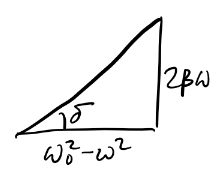
\[ A = \frac{f_0}{\sqrt{(\omega_0^2-\omega^2)^2 + 4\beta^2\omega^2}}, \quad \delta = \tan^{-1} \frac{2\beta\omega}{\omega_0^2-\omega^2}. \]
With these, the real particular solution is given by \(x_p(t) = A \cos(\omega t - \delta)\). Since the homogenous solution decays to zero exponentially, \(x \rightarrow x_p\) as \(t \rightarrow \infty\). That is, \(x_p(t)\) describes the steady state solution of the DDHO. In this sense, the system evidently “forgets” its own natural frequency and starts to oscillate at the driving frequency as time goes on and the transient state dies off.
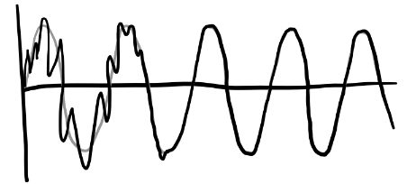
Interestingly, the memory of the transient dynamics is preserved in the amplitude and phase. As a rule of thumb, the number of oscillations \(N\) until \(x \approx x_p\) is basically just the Q-factor, \[ N \approx \frac{Q}{\pi}. \] Let’s now look more deeply at the amplitude and phase. It’s worth asking how they depend on the external driving frequency \(\omega\).
- When \(\omega \ll \omega_0\), \(A \approx \frac{f_0}{\omega_0^2}\) and \(\delta \approx 0\).
- When \(\omega \gg \omega_0\), \(A \approx 0\) and \(\delta \approx \pi\).
- When \(\omega \approx \omega_0\), \(A \approx \frac{f_0}{2\beta\omega_0}\) and \(\delta \approx \frac{\pi}{2}\).
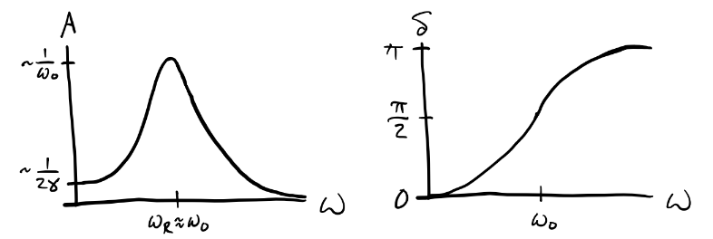
Evidently, \(A\) is maximized at \(\omega_R = \sqrt{\omega_0^2-2\beta^2} = \omega_0 \sqrt{1-\frac{1}{2Q^2}}\). When \(Q>1\), \(\omega_R \approx \omega_0\), so this distinction doesn’t really matter. This frequency \(\omega_R \approx \omega_0\) is called the resonance frequency of the system. When the driver is operating near the resonance frequency, the system responds extremely well to the driving force. It turns out that when a spectrum of frequencies is dumped on an oscillating system, the system tends to pick out the resonance frequencies and respond to those. This fact makes resonance a very important topic in physics and engineering.
In practice, high-Q systems are very common. In those cases, \(A\) dies off quickly when the driving frequencies aren’t close to \(\omega_0\). That means practically all the interesting behavior of a high-Q systems is in the band around the resonance frequency. Suppose \(\Delta \equiv \omega - \omega_0\) is small. Then we can write \[ (\omega_0^2-\omega^2) = (\omega_0-\omega)(\omega_0+\omega) = -\Delta(2\omega_0+\Delta) \approx -2\omega_0 \Delta. \] That means we can write the complex amplitude \(\tilde A\) as \[ \tilde A = \frac{f_0}{(\omega_0^2-\omega^2) + 2\beta\omega i} \approx -\frac{\frac{f_0}{2\omega_0}}{\Delta-\beta i} = \frac{f_0}{2\omega_0}\bigg(-\frac{\Delta}{\Delta^2+\beta^2} + i\frac{\beta}{\Delta^2+\beta^2} \bigg). \] This function on the right is called the Lorentzian. Using this, we can see \[ A \approx \frac{f_0}{2\omega_0} \frac{1}{\sqrt{\Delta^2 + \beta^2}} \quad \Longrightarrow \quad A^2 \approx \bigg(\frac{f_0}{2\omega_0}\bigg)^2 \frac{1}{\Delta^2 + \beta^2}. \] Since the energy in a harmonic oscillator is just \(E = \frac{1}{2}kA^2 \propto A^2\), it’s common to look at plots of \(A^2\) when plotting these resonance curves. Evidently, \(A^2 \rightarrow 0\) as \(\Delta \rightarrow \infty\), and it’s maximized when \(\Delta = 0\), which is when \(\omega = \omega_0\) and \(A_{max}^2 = \big(\frac{f_0}{2\omega_0 \beta}\big)^2\).
It’s common to measure the width of the resonance curve by using the full width at half maximum or FWHM. The FWHM is defined as the difference between the left and right points around the maximum whose height is half the maximum, \[ FWHM \equiv \Delta \omega \equiv \omega_R - \omega_L, \quad \text{where} \quad A^2(\omega_L) = A^2(\omega_R) = \frac{1}{2}A_{max}. \] Solving for these left and right points gives \(\omega_L = \omega_0 - \beta\) and \(\omega_R = \omega_0 + \beta\), so \[ \Delta \omega = (\omega_0 + \beta) - (\omega_0 - \beta) = 2\beta. \] The resolving power of the resonance curve is then \[ \frac{\omega_0}{\Delta} = \frac{\omega_0}{2\beta} = Q. \] Evidently then, \(Q\) represents the resolving power of the resonance curve. The higher the Q-factor is, the more sharply peaked the resonance curve is, and the easier we can pinpoint the resonance frequency exactly. Indeed, this is why \(Q\) is called a quality factor.
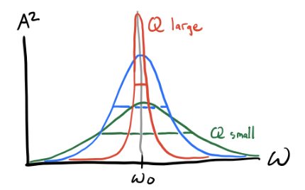
One very important system where we want a high-Q is a clock. To keep precise time, we need to make sure that it’s oscillating pretty much exactly at its resonance frequencies. This is because we need to keep a regular period, so \(\tau = \frac{2\pi}{\omega}\) can’t be allowed to vary very much from the true period \(\tau_0 = \frac{2\pi}{\omega_0}\). There’s a tradeoff though. Since the decay time of the transient behavior is \(N\tau_0 \equiv \frac{1}{\beta}\), it takes about \(N=\frac{Q}{\pi}\) cycles of ringing for the system to come to steady state. So the better precision we want, the longer we’ll have to wait for the system to come to steady state.
Note that \(Q\) also affects the phase curve of the system, since \[ \delta = \tan^{-1} \frac{2\beta\omega}{\omega_0^2-\omega^2} \approx \tan^{-1} \frac{2\omega}{Q\Delta}. \] Evidently as \(Q\) increases, the system becomes more responsive to sudden changes in phase around \(\omega_0\).
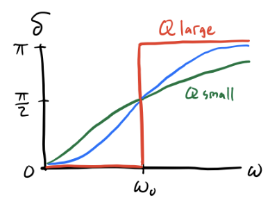
Arbitrary Driving Forces
The situation where resonance occurs in a DDHO system is not just confined to sinusoidal driving forces. Using Fourier analysis, we can decompose more arbitrary driving forces into a sum of sinusoidal driving forces of different frequencies. The simplest of these cases is when the driving force is periodic with some period \(\tau\). Even if the driver isn’t sinusoidal, we can decompose it into a linear combination of cosines of different frequencies, i.e. a Fourier Series, \[ f(t) = \sum_{n=-\infty}^{\infty} f_n e^{i \omega n t}, \] where each \(f_n\) can be found via the formula \[ f_n = \langle f(t), e^{i \omega n t} \rangle = \frac{\omega}{\pi} \int_0^{\tau} f(t) e^{i \omega n t} dt. \] Using the principle of superposition, we could then find the solution for each of the sinusoidal drivers term by term, and then sum them together to get the full solution. Each term will have amplitude and phase \[ A_n = \frac{f_n}{\sqrt{(\omega_0^2-\omega^2 n^2)^2 + (2\beta\omega n)^2}}, \quad \delta_n = \tan^{-1} \frac{2\beta\omega n}{\omega_0^2-\omega^2n^2}. \] Plugging these in will yield a general solution of the form \[ x(t) = x_h(t) + \sum_{n=1}^{\infty} A_n \cos(\omega n t - \delta_n). \] Each component will yield its own resonance frequency where \(\omega n \approx -\omega_0\). As a function of the main driving frequency, this means there will resonances at each \(\omega_n = \frac{\omega_0}{n}\). The resonance curve for \(A^2\) can be found via Parseval’s Theorem, which says \[ A^2 = \langle x^2(t) \rangle = \frac{1}{2} \sum_{n=0}^\infty A_n^2. \] The peaks evidently go to zero as \(n \rightarrow \infty\) since each \(A_n^2 \propto f_n^2\) and each \(f_n \rightarrow 0\) by the Riemann–Lebesgue lemma.
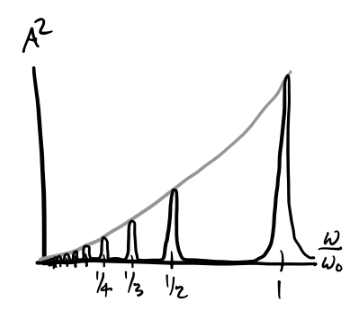
What if the driving force isn’t periodic? In this case we have a few options. One would be to decompose it into its Fourier transform, \[ f(t) = \int_{-\infty}^{\infty} f(\omega) e^{i\omega t} dt. \] Then each term gives a set of complex amplitudes and phases that can be solved for and stitched back together to get \(x(t)\). Another solution that’s perhaps more common is to use Green’s functions. Instead of decomposing the driver into a linear combination of periodic functions, we’ll decompose it into a linear combination of impulse responses or delta functions, \[ f(t) = \int_{-\infty}^{\infty} f(t') \delta(t-t') dt'. \] To find the solution \(x(t)\), we first need to find the particular solution \(G(t-t')\) to the DDHO with an impulse response, \[ \ddot G + 2\beta\dot G + \omega_0^2 G = \delta(t - t'). \] Once this is found, we can stitch together the full solution as \[ x(t) = \int_{-\infty}^{\infty} f(t') G(t-t') dt'. \] Note the Green’s function solution already incorporates in the homogeneous solution since \(G(t-t')\) must itself satisfy the initial conditions.